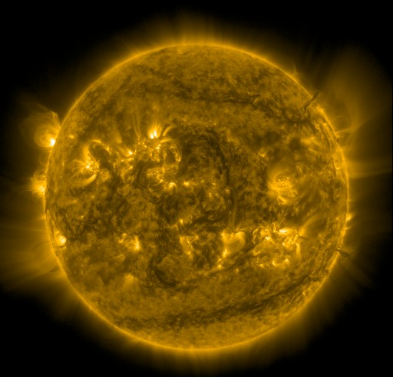

Entendendo as
Estrelas
As estrelas são corpos celestes gigantescos compostos principalmente por gases, especialmente
hidrogênio e hélio, que emitem luz e calor próprios por meio de reações nucleares que acontecem em seu
interior. Elas não são apenas “pontos brilhantes no céu”, mas verdadeiros laboratórios naturais, onde
elementos químicos se formam e transformam ao longo de bilhões de anos.
Como as Estrelas Produzem Energia?
No núcleo das estrelas ocorre um processo chamado fusão nuclear, em que átomos de hidrogênio se fundem
para formar hélio, liberando uma enorme quantidade de energia. Essa energia se propaga até a superfície
da estrela e é emitida em forma de luz e calor — é isso que faz com que as estrelas brilhem. No caso do
nosso Sol, por exemplo, essa energia é essencial para manter a vida na Terra.
 Uma nuvem brilhante de gás e poeira revela a intensa
atividade de formação estelar na NGC 346, uma das maiores regiões de nascimento de estrelas da Pequena
Nuvem
de Magalhães. Esta imagem, capturada pelo Telescópio Espacial James Webb, mostra o coração turbulento
desse
berçário cósmico, onde novas estrelas estão se formando a partir do colapso gravitacional de estruturas
gasosas multicoloridas.
Uma nuvem brilhante de gás e poeira revela a intensa
atividade de formação estelar na NGC 346, uma das maiores regiões de nascimento de estrelas da Pequena
Nuvem
de Magalhães. Esta imagem, capturada pelo Telescópio Espacial James Webb, mostra o coração turbulento
desse
berçário cósmico, onde novas estrelas estão se formando a partir do colapso gravitacional de estruturas
gasosas multicoloridas.
Nascimento, Vida e Morte de uma Estrela
As estrelas não são eternas. Elas nascem a partir de grandes nuvens de gás e poeira, chamadas
nebulosas. A gravidade faz com que essas nuvens se contraiam até formarem uma bola densa e quente: o
embrião de uma estrela. Quando a fusão começa, temos o nascimento de uma nova estrela.

Loops brilhantes de plasma quente se arqueiam sobre regiões ativas da superfície solar
nesta
imagem em ultravioleta extremo (171 Å), capturada pelo Observatório Solar Dinâmico.
Dependendo de sua massa, ela pode viver milhões ou até bilhões de anos. No fim de sua vida, uma
estrela pode se transformar em uma anã branca, uma estrela de nêutrons ou até mesmo em um buraco negro,
dependendo de quão massiva ela era.

Conheça alguns tipos de Estrelas
Anãs vermelhas
As estrelas mais comuns do universo, pequenas e de longa duração.
Duração de vida:
10 trilhões de ano
Estrelas como o Sol
Estrelas de massa média que sustentam sistemas planetários.
Duração de vida:
10 bilhões de anos
Gigantes Azuis
Estrelas massivas e quentes que vivem rápido e morrem jovens.
Duração de vida:
Milhões de anos
Supergigantes
As maiores estrelas conhecidas, destinadas a explodir como supernovas.
Duração de vida:
Centenas de milhares de anos